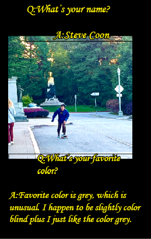
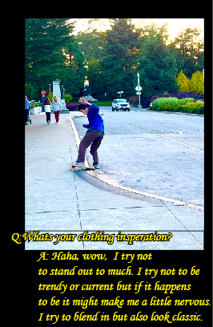
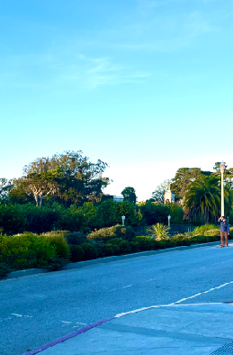

Steve
Small magazines, 5 by 3 ¼ in
2023
My zine titled “Steve” is an interview with one of my friends that I skateboard with. There are so many interviews with celebrities and popular figures. I wanted to interview someone that I look up to. The design is dynamic because of the bright colors and how I established a grid and then broke it. Using one of his favorite albums by the Cranberries, To The Faithful Departed, as design inspiration, I created a zine that captures Steve and all his awesomeness.





